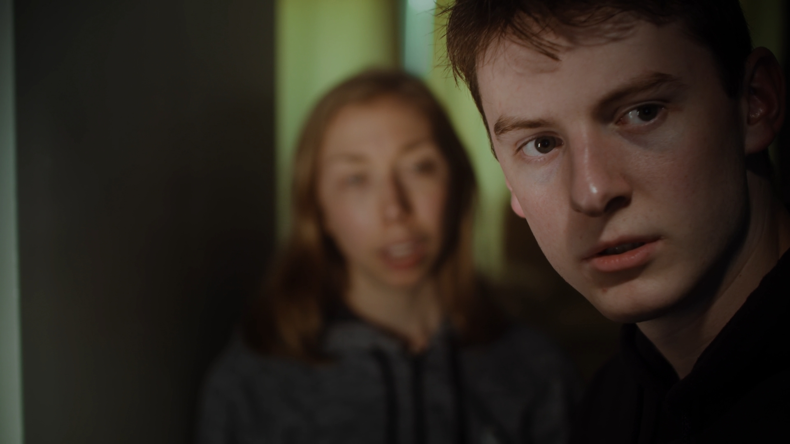
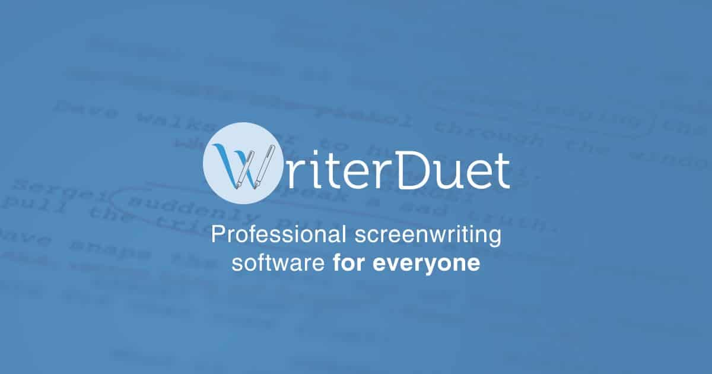
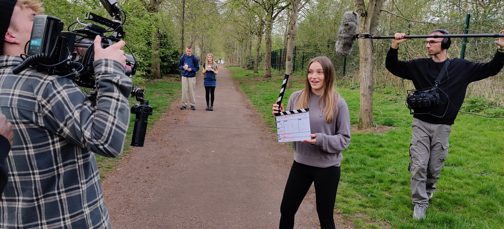
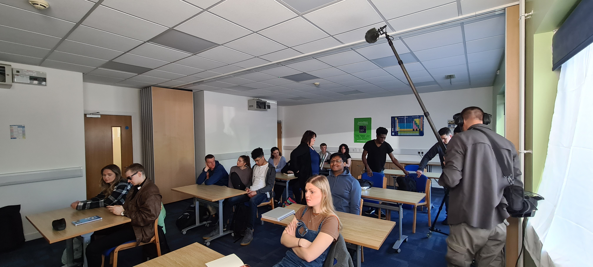
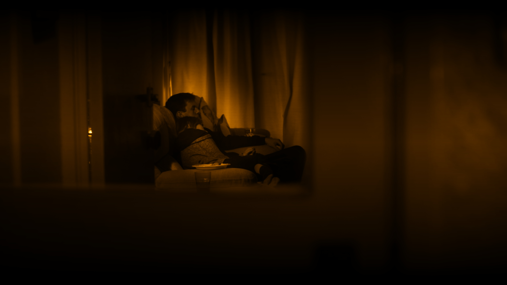

Adders Film School: Where Your Story Begins
Embark on an extraordinary filmmaking journey with Adders Film School! At Adders Film School, we’re redefining film education—preparing you for a career in the industry without the hefty price tag or time commitment of university. With hands-on training from industry professionals and access to 4K HDR equipment, you’ll be ready to stand out in the film industry. Ready to take your first steps? Explore our memberships below and start your journey toward becoming a filmmaker!.

The Idea of Presence. Step in front of the glass and master the ultra-high-definition art of "the moment." In a 6K environment, every breath and eyelid twitch tells a story. We move beyond "theatrical" acting into the raw, cinematic realism required for modern 4K HDR films.

This is where Broadway meets the big screen. Learn how to translate the energy of live performance into a structured cinematic narrative. We focus on the precision of lip-syncing, movement for the lens, and integrating high-fidelity audio with sweeping 6K visuals to create "The New Hollywood" musical.

Creating the Narrative. Great films aren't filmed; they are built. You will master WriterDuet, the industry-standard collaborative software, to draft scripts that look and read like professional studio commissions.

The 6K Raw Workflow. Get your hands on the Blackmagic Pyxis 6K—the newest Blackmagic cinema box camera on the market. You’ll learn to manipulate light, texture, and depth of field in 4K HDR.

Become the Captain of the ship. Being a director is about more than "Action." It’s about technical leadership. Learn how to manage a high-end production and lead your cast through complex emotional beats.
A film is truly "born" in the edit. You’ll dive deep into DaVinci Resolve, mastering the same tools used by Hollywood colourists. Go beyond basic cuts—use Fusion for advanced visual effects, learn HDR grading, audio mastering and finish your projects for the silver screen.

Through hands-on exercises and real-world experiences, you’ll gain the confidence and expertise needed to shine in supporting roles. Whether you’re looking to enhance your acting skills or simply want to try something new, this module is an excellent way to develop your creative horizons.
In our state-of-the-art recording suite, students will learn the art of capturing exceptional vocal performances. Through professional vocal training, students will discover how to produce high-quality recordings that showcase their unique voice and style.

Unlock the Secrets of Visual Storytelling... In this advanced course, students will delve into the art of cinematography, exploring the technical aspects of camera operation, lighting design, and visual composition.